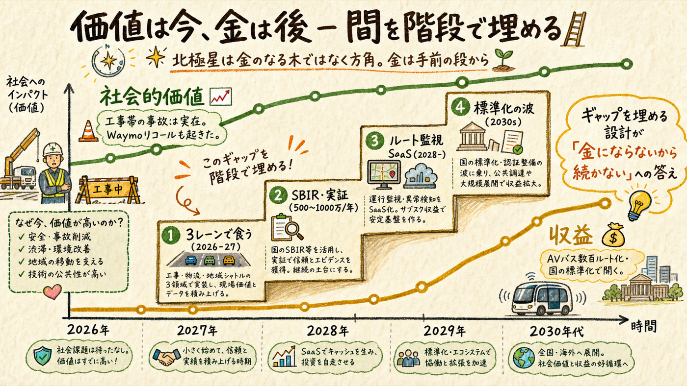
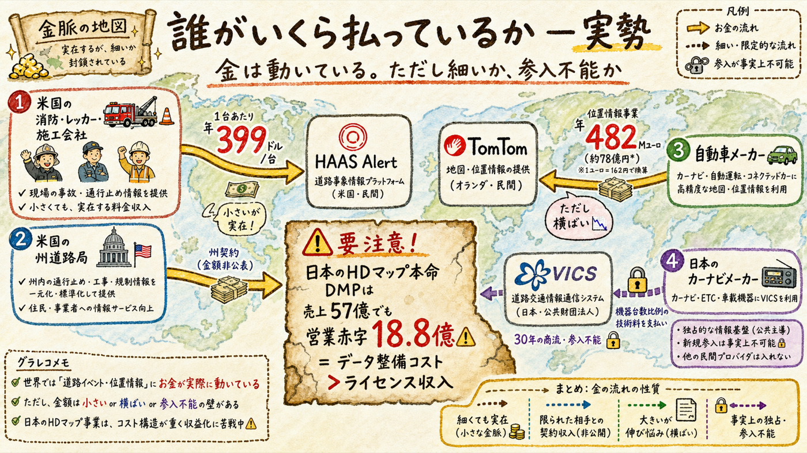
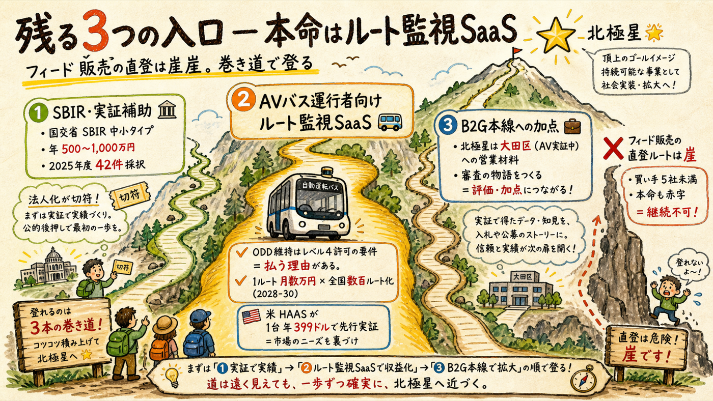
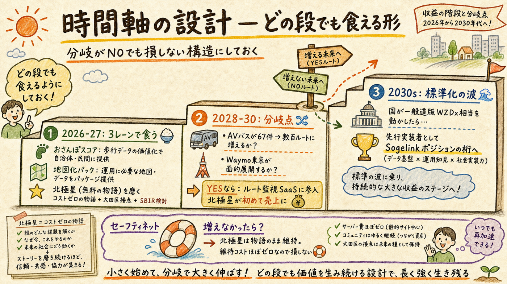

「金にならないと続けられない」— その通りなので、世界で実際に誰がいくら払っているかを調べて正直に答える。結論: 北極星（一般道版WZDxフィード事業）そのものは5年以内に生活可能な収益にならない（確度80%）。しかし「続けるための金」の細い道は3本実在し、最有力は『自動運転バス運行事業者向けのルート監視SaaS』への読み替え。北極星は金のなる木ではなく方角 — 金は手前の階段から出す構造にすれば、「金にならないから続かない」は回避できる。
あなたの直感（ニッチで規模は大きくない）は正しい。問題は規模より時間差

社会的価値は今すでに実在する（工事帯の死者・Waymoのリコール）。しかし「その価値に金を払う買い手」が日本の一般道にはまだいない — AVの面的走行が始まっていないから。つまりこれは「価値がない事業」ではなく「価値と収益に2〜4年の時間差がある事業」。続けられるかどうかは、この時間差を何で食いつなぐかの設計問題で、答えは既に持っている: 3レーン（おさんぽスコア・地図化パック）が食い扶持、北極星は方角。
金は動いている。ただし細いか、参入不能かのどちらか

| 事例 | 誰が→誰に | 金額（実勢） | 示唆 |
|---|---|---|---|
| HAAS Alert（米） | 消防・レッカー・施工会社 → HAAS（警告を発したい側が払う） | Road Pro $399/年/車両＋機器$399。累計調達約$5.1M | work zoneデータで金が動く最重要実証。ただし市場はまだ小さい |
| one.network（米） | 州道路局 → アグリゲータ | FDOT 3年契約（16,600閉鎖登録）・UDOT州全域 — 金額非公表 | 払うのは行政。B2G構造は日本の本線と同じ |
| TomTom（欧） | 自動車OEM → 地図会社 | Location Technology €482M/年（前年比-3%と横ばい） | OEM向けフィードは実在するが成長市場ではない |
| DMP（日・上場336A） | OEM → HDマップ会社 | 2026/3期 売上56.9億円・営業損失18.8億円 | 高速HDマップの本命ですら赤字。データ整備コスト＞ライセンス収入。個人がフィード販売で食う道はない |
| VICS / JARTIC（日） | カーナビメーカーの台数比例技術料／警察・国交省の委託費 | 30年続く商流（規模非公表） | 「道路データに払う」日本の既存商流はすべて参入障壁の内側 |
きつい事実を3行で: ①フィードの買い手は日本に5社未満 ②その本命ですら赤字 ③ナビ（Waze/Google）は行政からデータを無料で貰う側で、あなたに払う理由がない。「一般道版WZDxのフィードを売る」を直接の事業計画にしてはいけない。
フィード販売の直登は崖。登れる巻き道が3本ある

| 入口 | 実勢の根拠（一次） | 金額感 |
|---|---|---|
| ① SBIR・実証補助 | 国交省SBIR建設技術（中小SUタイプ）2025年度42件採択。自動運転社会実装推進事業は2024年度99件・補助上限1〜3億円（補助率4/5） | 年500〜1,000万円（SBIR）。法人化が切符 — G3ゲート（法人化判断）の新しい判断材料 |
| ② AVバス運行者向け「ルート上工事監視」SaaS | 境町のAVバスは3台5年で5.2億円、うち初期のマップ・ルート設定だけで0.52億円。現場は「障害物検知で停止・路駐は住民にお願い」の運用＝ルート上の変化を事前に知る手段がない。ODD（運行設計領域）の維持はレベル4許可の要件＝払う業務上の理由がある。米HAASが$399/車・年で同型を実証済み | 1ルート月数万円 [推定]。全国実証は年67〜99件→2028-30に数百ルート化すれば年数千万円の市場。北極星が初めて売上になる読み替え |
| ③ B2G本線への加点 | 大田区は天空橋〜萩中公園でL4目標のAVバス実証中（区公式）。「工事情報の機械可読化はAV実証にも効く」は道路管理課への提案を一段強くする | 直接の売上ではなく、地図化パック・工事マップ待ち受けの成約率を上げる営業材料 |
分岐がNOでも損しない構造

| 時期 | 食い扶持 | 北極星まわりでやること |
|---|---|---|
| 2026-27 | 3レーン（おさんぽスコア・地図化パック）＋G-Pゲートで主戦決定 | コストゼロの範囲のみ: 大田区接点（8月・予定通り）・発信の物語に使う・SBIRの応募要件をAIが調査。新しい実装はしない |
| 2028-30 （分岐点） | 主戦＋必要ならSBIR（年500〜1,000万） | 監視シグナルが点灯したら（AVバス数百ルート化 or Waymo東京面的展開 or 国の枠組み始動）→ ルート監視SaaSに参入。ここで初めて北極星が売上になる |
| 2030s | ルート監視SaaS＋標準化後の事務代行 | 国が一般道版WZDx相当を動かした時、先行実装者としてSogelinkポジション（義務の事務代行）の桁が視野に入る |
セーフティネット: もしAVバスが増えず、国が全部官製でやってしまったら？ — 北極星は「物語」のまま維持する。維持コストはほぼゼロ（AI監視と発信の軸に使うだけ）なので、外れても失うものがない。これが「社会的価値はあるが金になるか不明なもの」の正しい持ち方: 今日の金は求めない、今日のコストもかけない、シグナルが点いたら最前列から動く。